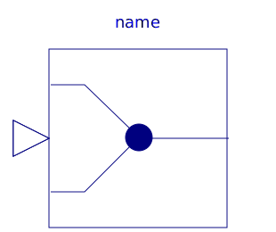
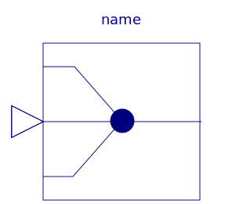
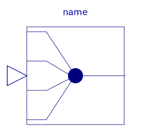
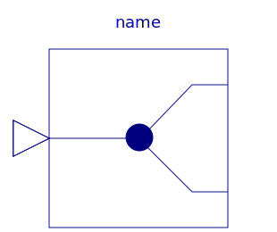
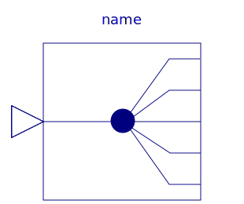
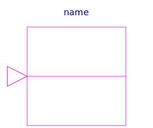

This package contains blocks to combine and extract signals.
| Name | Description |
|---|---|
| Signal replicator | |
| Extract signals from an input signal vector | |
| Extract scalar signal out of signal vector dependent on IntegerRealInput index | |
|  Multiplex2 | Multiplexer block for two input connectors |
|  Multiplex3 | Multiplexer block for three input connectors |
|  Multiplex4 | Multiplexer block for four input connectors |
| Multiplexer block for five input connectors | |
| Multiplexer block for six input connectors | |
|  DeMultiplex2 | DeMultiplexer block for two output connectors |
| DeMultiplexer block for three output connectors | |
| DeMultiplex4 | DeMultiplexer block for four output connectors |
|  DeMultiplex5 | DeMultiplexer block for five output connectors |
| DeMultiplexer block for six output connectors | |
| Pass a Real signal through without modification | |
| Pass a Integer signal through without modification | |
|  BooleanPassThrough | Pass a Boolean signal through without modification |